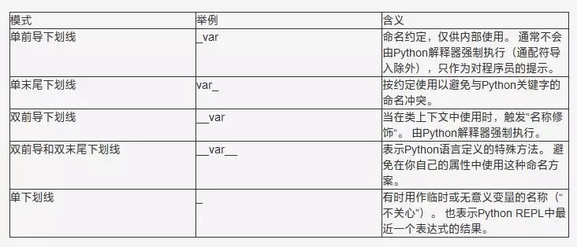

- Guion bajo inicial único:_var
- Guion bajo final único:var_
- Guion bajo inicial doble:__var
- Guion bajo inicial y final doble:__var__
- Guion bajo único:_
Al final del artículo, encontrarás una breve "tabla de referencia rápida" que resume las cinco convenciones de nomenclatura con guion bajo y sus significados, así como un breve video tutorial que te permite experimentar su comportamiento de primera mano.
¡Empecemos de inmediato!
1. Guion bajo inicial único _var
Cuando se trata de nombres de variables y métodos, un prefijo de un solo guion bajo tiene un significado convencional. Es una pista para el programador: significa que la comunidad de Python acuerda cómo debe interpretarse, pero el comportamiento del programa no se ve afectado.
El significado del prefijo de guion bajo es informar a otros programadores: las variables o métodos que comienzan con un solo guion bajo están destinados solo para uso interno. Esta convención está definida en PEP 8.
Esto no es impuesto por Python. A diferencia de Java, Python no tiene una distinción fuerte entre variables "privadas" y "públicas". Es como si alguien colocara una pequeña señal de advertencia con un guion bajo, que dice:
"Oye, esto no está realmente destinado a ser parte de la interfaz pública de la clase. Mejor déjalo en paz."
Mira el siguiente ejemplo:
class Test:
def __init__(self):
self.foo = 11
self._bar = 23
Si creas una instancia de esta clase e intentas acceder a los atributos foo y _bar definidos en el constructor __init__, ¿qué sucede? Echemos un vistazo:
>>> t = Test() >>> t.foo 11 >>> t._bar 23
Verás que el guion bajo único en _bar no nos impide "entrar" en la clase y acceder al valor de esa variable.
Esto se debe a que el prefijo de un solo guion bajo en Python es solo una convención, al menos en lo que respecta a nombres de variables y métodos.
Sin embargo, el guion bajo inicial sí afecta la forma en que se importan los nombres desde un módulo.
Supón que tienes el siguiente código en un módulo llamado my_module:
# This is my_module.py: def external_func(): return 23 def _internal_func(): return 42
Ahora, si usas un comodín para importar todos los nombres desde el módulo, Python no importará los nombres que tengan un guion bajo inicial (a menos que el módulo defina una lista __all__ que anule este comportamiento):
>>> from my_module import * >>> external_func() 23 >>> _internal_func() NameError: "name '_internal_func' is not defined"
Por cierto, se deben evitar las importaciones con comodín, porque hacen que no esté claro qué nombres existen en el espacio de nombres. Por claridad, es mejor ceñirse a las importaciones normales.
A diferencia de las importaciones con comodín, las importaciones normales no se ven afectadas por la convención de nomenclatura del guion bajo inicial único:
>>> import my_module >>> my_module.external_func() 23 >>> my_module._internal_func() 42
Sé que esto puede resultar un poco confuso. Si sigues la recomendación de PEP 8 y evitas las importaciones con comodín, lo único que realmente necesitas recordar es esto:
Un solo guion bajo es una convención de nomenclatura de Python que indica que el nombre está destinado a uso interno. Normalmente no es aplicado por el intérprete de Python, sino que sirve simplemente como una pista para el programador.
2. Guion bajo final único var_
A veces, el nombre más adecuado para una variable ya está ocupado por una palabra clave. Por lo tanto, nombres como class o def no se pueden usar como nombres de variables en Python. En ese caso, puedes agregar un guion bajo al final para resolver el conflicto de nomenclatura:
>>> def make_object(name, class): SyntaxError: "invalid syntax" >>> def make_object(name, class_): ... pass
En resumen, un solo guion bajo final (sufijo) es una convención para evitar conflictos de nomenclatura con palabras clave de Python. PEP 8 explica esta convención.
3. Guion bajo inicial doble __var
Hasta ahora, el significado de todos los patrones de nomenclatura que hemos cubierto proviene de convenciones acordadas. Pero en el caso de los atributos de una clase de Python que comienzan con doble guion bajo (incluyendo variables y métodos), la situación es un poco diferente.
El prefijo de doble guion bajo hace que el intérprete de Python reescriba el nombre del atributo para evitar conflictos de nomenclatura en las subclases.
Esto también se llama name mangling (deformación de nombres): el intérprete cambia el nombre de la variable para que sea menos probable que se produzcan conflictos cuando la clase se extiende.
Sé que suena abstracto. Por ello, he preparado un pequeño ejemplo de código para ilustrarlo:
class Test:
def __init__(self):
self.foo = 11
self._bar = 23
self.__baz = 23
Usemos la función incorporada dir() para examinar los atributos de este objeto:
>>> t = Test() >>> dir(t) ['_Test__baz', '__class__', '__delattr__', '__dict__', '__dir__', '__doc__', '__eq__', '__format__', '__ge__', '__getattribute__', '__gt__', '__hash__', '__init__', '__le__', '__lt__', '__module__', '__ne__', '__new__', '__reduce__', '__reduce_ex__', '__repr__', '__setattr__', '__sizeof__', '__str__', '__subclasshook__', '__weakref__', '_bar', 'foo']
La lista anterior son los atributos de este objeto. Miremos esta lista y busquemos nuestros nombres de variables originales foo, _bar y __baz; te garantizo que notarás algunos cambios interesantes.
La variable self.foo aparece en la lista de atributos sin modificar como foo.
self._bar se comporta de la misma manera: aparece en la clase como _bar. Como dije antes, en este caso el guion bajo inicial es solo una convención. Es simplemente una pista para el programador. Sin embargo, para self.__baz, la situación parece un poco diferente. Cuando busques __baz en esa lista, no verás ninguna variable con ese nombre.
¿Qué le ha pasado a __baz?
Si observas con atención, verás que hay un atributo llamado _Test__baz en este objeto. Eso es lo que hace el intérprete de Python con el name mangling. Lo hace para evitar que la variable sea sobrescrita en las subclases.
Creemos otra clase que extienda la clase Test e intentemos sobrescribir los atributos existentes añadidos en el constructor:
class ExtendedTest(Test):
def __init__(self):
super().__init__()
self.foo = 'overridden'
self._bar = 'overridden'
self.__baz = 'overridden'
Ahora, ¿crees que los valores de foo, _bar y __baz aparecerán en una instancia de esta clase ExtendedTest? Echemos un vistazo:
>>> t2 = ExtendedTest() >>> t2.foo 'overridden' >>> t2._bar 'overridden' >>> t2.__baz AttributeError: "'ExtendedTest' object has no attribute '__baz'"
Espera, ¿por qué obtenemos un AttributeError cuando intentamos ver el valor de t2.__baz? ¡El name mangling se ha activado de nuevo! Resulta que este objeto ni siquiera tiene un atributo __baz:
>>> dir(t2) ['_ExtendedTest__baz', '_Test__baz', '__class__', '__delattr__', '__dict__', '__dir__', '__doc__', '__eq__', '__format__', '__ge__', '__getattribute__', '__gt__', '__hash__', '__init__', '__le__', '__lt__', '__module__', '__ne__', '__new__', '__reduce__', '__reduce_ex__', '__repr__', '__setattr__', '__sizeof__', '__str__', '__subclasshook__', '__weakref__', '_bar', 'foo', 'get_vars']
Como puedes ver, __baz se convierte en _ExtendedTest__baz para evitar modificaciones accidentales:
>>> t2._ExtendedTest__baz 'overridden'
Pero el original _Test__baz sigue ahí:
>>> t2._Test__baz 42
El name mangling con doble guion bajo es completamente transparente para el programador. El siguiente ejemplo lo confirma:
class ManglingTest:
def __init__(self):
self.__mangled = 'hello'
def get_mangled(self):
return self.__mangled
>>> ManglingTest().get_mangled()
'hello'
>>> ManglingTest().__mangled
AttributeError: "'ManglingTest' object has no attribute '__mangled'"
¿El name mangling también se aplica a los nombres de métodos? Sí, también se aplica. El name mangling afecta a todos los nombres que comienzan con dos caracteres de guion bajo ("dunders") en el contexto de una clase:
class MangledMethod:
def __method(self):
return 42
def call_it(self):
return self.__method()
>>> MangledMethod().__method()
AttributeError: "'MangledMethod' object has no attribute '__method'"
>>> MangledMethod().call_it()
42
Este es otro ejemplo, quizás sorprendente, del uso del name mangling:
_MangledGlobal__mangled = 23
class MangledGlobal:
def test(self):
return __mangled
>>> MangledGlobal().test()
23
En este ejemplo, declaro una variable global llamada _MangledGlobal__mangled. Luego accedo a la variable en el contexto de una clase llamada MangledGlobal. Gracias al name mangling, puedo referirme a la variable global _MangledGlobal__mangled como __mangled dentro del método test() de la clase.
El intérprete de Python expande automáticamente el nombre __mangled a _MangledGlobal__mangled porque comienza con dos caracteres de guion bajo. Esto demuestra que el name mangling no está asociado exclusivamente con atributos de clase. Se aplica a cualquier nombre que comience con dos caracteres de guion bajo utilizado en el contexto de una clase.
Hay mucho que asimilar, ¿verdad?
Para ser honesto, estos ejemplos y explicaciones no salieron directamente de mi cabeza. Investigué y procesé algo de información para lograrlo. He usado Python durante muchos años, pero reglas y casos especiales como estos no siempre están presentes en mi mente.
A veces, la habilidad más importante de un programador es el "reconocimiento de patrones" y saber dónde consultar información. Si te sientes un poco abrumado en este punto, no te preocupes. Tómate tu tiempo y prueba algunos de los ejemplos de este artículo.
Deja que estos conceptos se asienten por completo, para que puedas comprender la idea general del name mangling y algunos de los otros comportamientos que te he mostrado. Si algún día te los encuentras de manera inesperada, sabrás qué buscar en la documentación.
4. Guion bajo inicial y final doble _var_
Quizás sorprendentemente, si un nombre comienza y termina con doble guion bajo, no se aplica el name mangling. Las variables rodeadas por un prefijo y sufijo de doble guion bajo no son modificadas por el intérprete de Python:
class PrefixPostfixTest:
def __init__(self):
self.__bam__ = 42
>>> PrefixPostfixTest().__bam__
42
Sin embargo, Python reserva los nombres con doble guion bajo inicial y final para fines especiales. Ejemplos de esto son el constructor de objetos __init__, o __call__, que hace que un objeto sea invocable.
Estos métodos dunder a menudo se denominan métodos mágicos, pero a muchas personas en la comunidad de Python, incluido yo mismo, no les gusta esta denominación.
Es mejor evitar usar nombres que comiencen y terminen con doble guion bajo ("dunders") en tus propios programas, para evitar conflictos con futuros cambios en el lenguaje Python.
5. Guion bajo único _
Por convención, a veces se utiliza un guion bajo solitario como nombre para indicar que una variable es temporal o irrelevante.
Por ejemplo, en el siguiente bucle, no necesitamos acceder al índice en ejecución; podemos usar "_" para indicar que es solo un valor temporal:
>>> for _ in range(32):
... print('Hello, World.')
También puedes usar un solo guion bajo como variable "no me importa" en expresiones de desempaquetado (unpacking) para ignorar valores específicos. De nuevo, este significado es solo "por convención" y no desencadena un comportamiento especial en el intérprete de Python. Un solo guion bajo es simplemente un nombre de variable válido que se usa para este propósito.
En el siguiente ejemplo de código, desempaqueto una tupla de automóvil en variables separadas, pero solo me interesan el color y el valor del kilometraje. Sin embargo, para que la expresión de desempaquetado se ejecute correctamente, necesito asignar todos los valores contenidos en la tupla a variables. En este caso, "_" como variable de marcador de posición puede resultar útil:
>>> car = ('red', 'auto', 12, 3812.4)
>>> color, _, _, mileage = car
>>> color
'red'
>>> mileage
3812.4
>>> _
12
Además de usarse como variable temporal, "_" es una variable especial en la mayoría de los REPL de Python; representa el resultado de la expresión más reciente evaluada por el intérprete.
Esto es muy conveniente; por ejemplo, puedes acceder a resultados calculados previamente en una sesión del intérprete, o si estás construyendo dinámicamente múltiples objetos e interactuando con ellos, sin necesidad de asignar nombres a esos objetos de antemano:
>>> 20 + 3 23 >>> _ 23 >>> print(_) 23 >>> list() [] >>> _.append(1) >>> _.append(2) >>> _.append(3) >>> _ [1, 2, 3]
Patrones de nomenclatura con guion bajo en Python - Resumen
A continuación se presenta un breve resumen, una "hoja de referencia", que enumera el significado de los cinco patrones de guion bajo en Python que he mencionado en este artículo:

Dirección original: https://zhuanlan.zhihu.com/p/36173202
Haz clic para compartir notas
<p style="font-size:14px;">¡Las notas deben ser una extensión del contenido de este artículo!</p><br> <p style="font-size:12px;"><a href="../tougao.html" target="_blank">Para enviar artículos, haz clic aquí</a></p> <p style="font-size:14px;"><a href="./runoob-user-test-intro.html" target="_blank">Cómo obtener el código de invitación de registro</a></p> <h3 class="text-muted"><i class="fa fa-info-circle" aria-hidden="true"></i> ¡Debes <a href=".." class="runoob-pop">iniciar sesión</a> antes de compartir notas!</h3> <p><a href="./runoob-user-test-intro.html" target="_blank">Cómo obtener el código de invitación de registro</a></p>